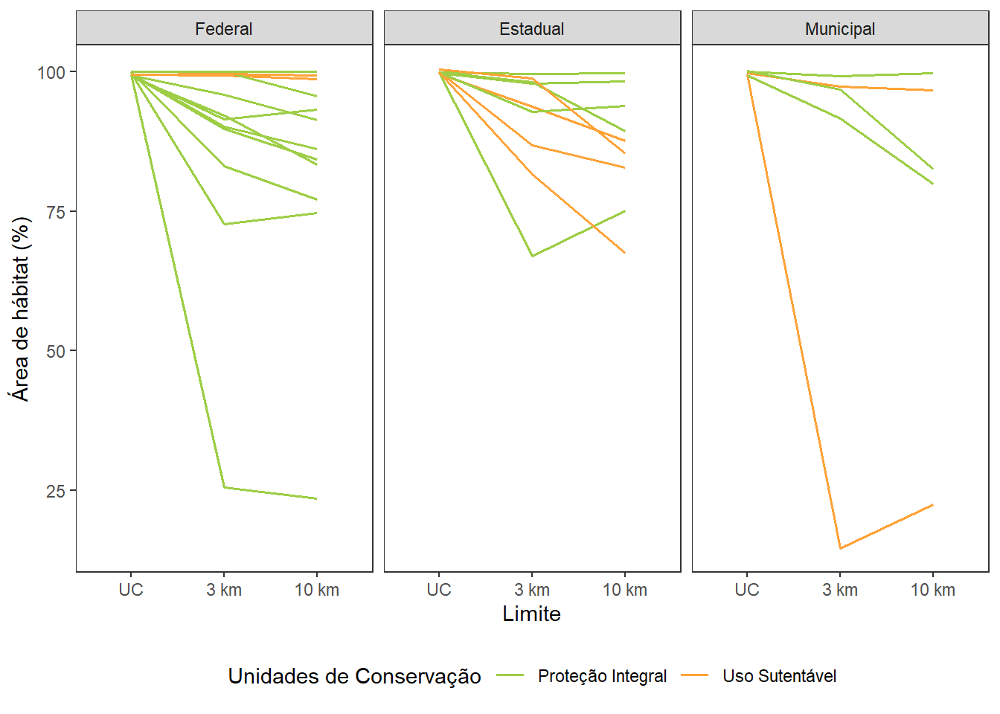
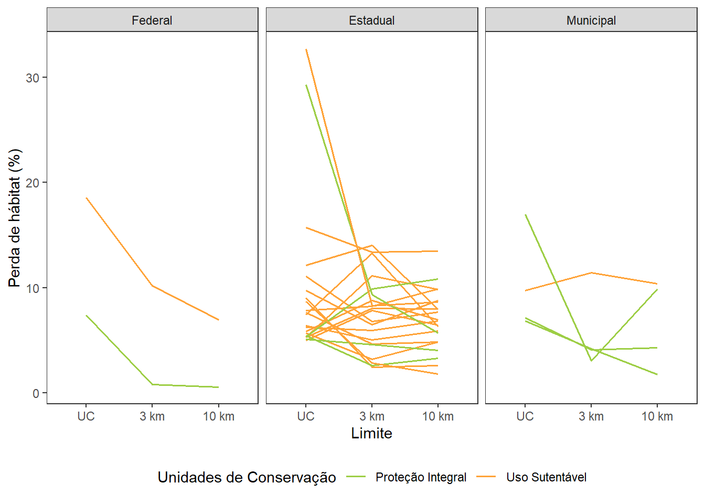

Perda de hábitat nas Unidades de Conservação do Plano de Ação Nacional para a Conservação das Espécies Ameaçadas da Ictiofauna, Herpetofauna e Primatas do Cerrado e Pantanal (CERPAN) - Relatório preliminar
Apresentação
Os Planos de Ação Nacional para a Conservação das Espécies Ameaçadas de Extinção ou do Patrimônio Espeleológico (PANs) são instrumentos de gestão construídos em conjunto com a sociedade, adotados para promover a melhoria do estado de conservação dos ambientes naturais com ocorrência de espécies endêmicas ou ameaçadas de extinção (Brasil, 2018a). Isso se dá por meio da identificação e orientação das ações prioritárias para combater as ameaças que põem em risco tanto populações de espécies como os ambientes em que vivem. O Centro Nacional de Pesquisa e Conservação de Répteis e Anfíbios (RAN/ICMBio), como uma de suas atribuições, coordena os PANs voltados a conservação da herpetofauna em risco de extinção no Brasil, podendo articular e implementar ações, além de monitorá-las e avaliá-las periodicamente. Mediante oficinas de planejamento participativas e um processo de monitoria e refinamento contínuo, envolvendo o acompanhamento de especialistas nas espécies e nos territórios, objetivos são identificados e, a partir deles, ações são recomendadas e implementadas (ICMBio, 2018).
O objetivo deste documento é identificação as unidades de conservação com maiores perdas de área de hábitat até 2021 e, assim, apoiar a identificação de áreas vulneráveis à perda e fragmentação de hábitat no interior e no entorno das unidades de conservação localizadas em áreas estratégicas do Plano de Ação Nacional para a Conservação das Espécies Ameaçadas da Ictiofauna, Herpetofauna e Primatas do Cerrado e Pantanal (CERPAN; Brasil (2018b)). Essa identificação é uma das ações do CERPAN (ação 2.5), que busca promover a proteção e a conectividade dos hábitats das espécies-alvo. Para cumprir esse objetivo, foram estabelecidas as seguintes etapas:
Seleção das Unidades de Conservação.
Lista das unidades de conservação (UCs) de proteção integral e de uso sustentável federais, estaduais e municipais localizadas nas áreas estratégicas do CERPAN.
Reclassificação dos dados do Projeto MapBiomas (2011 e 2021)
Identificação das classes do MapBiomas consideradas hábitat para os grupos de espécies alvo do CERPAN (ictiofauna, herpetofauna e primatas).
Estimativa da mudança na cobertura do solo em 10 anos
Álgebra de mapas para a identificação de áreas onde houve mudança e persistência das classes de hábitat e de não hábitat.
Resultados preliminares
Elaboração de tabelas e figuras resultantes das análises e detalhamento das informações em fichas por área estratégica.
Área de estudo
O Plano de Ação Nacional para a Conservação das Espécies Ameaçadas da Ictiofauna, Herpetofauna e Primatas do Cerrado e Pantanal (CERPAN; Brasil (2018b)) abrange integral ou parcialmente 13 estados das regiões Norte, Nordeste, Sudeste, Sul e Centro-oeste do Brasil (Rondônia, Pará, Tocantins, Maranhão, Piauí, Bahia, Minas Gerais, São Paulo, Paraná, Mato Grosso do Sul, Mato Grosso, Goiás e Distrito Federal), correspondendo a uma área total de aproximadamente 2.646.608 km². O CERPAN abrange os biomas cerrado e pantanal, além de parte da bacia dos rios Tocantins e Araguaia, localizada no bioma Amazônia. A cobertura do solo é majoritariamente composta por pastagem (27,08%), formação savânica (23,60%), formação florestal (20,76%), soja (7,70%) e formação campestre (6,29%) (Projeto MapBiomas, 2022).
Metodologia
Unidades de conservação
As unidades de conservação (UCs) de proteção integral e de uso sustentável federais, estaduais e municipais (ICMBio, 2022; MMA, 2022) localizadas na área de abrangência do CERPAN foram consideradas.
Cobertura do solo
Os dados de cobertura do solo da Coleção 7 do Projeto MapBiomas (2022) referentes aos anos de 2011 e 2021 foram utilizados para estimativa das áreas de hábitat no interior das UCs e nas áreas de entorno. As classes presentes no intervalo de dez anos foram reclassificadas (Tabela 1). Com isso, as classes de uso e cobertura em cada ano foram categorizadas em hábitat e não hábitat para os grupos de espécies alvo do CERPAN. Este documento apresenta uma parte desses resultados, referentes a percentagem de perda de hábitat acumulada em cada UC até 2021.
| Classes | Hábitat |
|---|---|
| Formação Florestal, Formação Savânica, Mangue, Restinga Arborizada, Campo Alagado e Área Pantanosa, Formação Campestre, Apicum, Afloramento Rochoso, Restinga Herbácea, Outras Formações não Florestais, Praia, Duna e Areal, Rio, Lago e Oceano | Sim |
| Pastagem, Soja, Cana, Arroz, Algodão (beta), Outras Lavouras Temporárias, Café, Citrus, Outras Lavouras Perenes, Silvicultura (monocultura), Mosaico de Usos, Área Urbanizada, Mineração, Outras Áreas não Vegetadas, Aquicultura | Não |
Os arquivos matriciais resultantes dessa reclassificação, os quais possuem pixels com valores 1 para hábitat e 0 para não hábitat, foram utilizados em uma série de álgebra de mapas que calcularam, para as áreas das UCs e de seus entornos:
- a perda de hábitat acumulada até cada ano;
- a perda de hábitat em dez anos (entre 2011 e 2021). Equivale à área que era hábitat no ano 1 e deixou de ser hábitat no ano 2;
- o “ganho” de hábitat em dez anos (2011 - 2021). Essa medida representa, o que não era hábitat no ano 1 e passou a ser no ano 2, sem especificar os meios pelos quais isso aconteceu nem implicar necessariamente em melhoria do hábitat, por não ser possível avaliar qualidade do sub-bosque, cobertura do solo, etc.;
- a área que permaneceu hábitat durante todo o período.
Métricas de paisagem
Para estimar a fragmentação das áreas de hábitat nas UCs e entorno, foram calculadas seis métricas de paisagem (Hesselbarth et al., 2021):
- Área de hábitat (km²):
- é a soma das áreas de todos os fragmentos pertencentes a classe hábitat. A área de hábitat é uma medida absoluta, tornando difícil comparações entre paisagens com áreas totais diferentes, mas permitindo comparações de uma mesma área em anos diferentes;
- Porcentagem de remanescentes de hábitat na paisagem:
- é a porcentagem da área de uma paisagem que corresponde a hábitat. Devido ao seu caráter relativo, é diretamente comparável entre paisagens de diferentes áreas;
- Número de fragmentos de hábitat:
- descreve a fragmentação do hábitat, apesar de não conter necessariamente informação sobre a configuração do hábitat;
- Porcentagem ocupada pelo maior fragmento de hábitat:
- é a porcentagem da paisagem coberta pelo maior fragmento de hábitat. É uma medida simples de dominância;
- Área média dos fragmentos de hábitat (km²):
- média de todos os fragmentos de hábitat contidos na área avaliada. É uma forma simples de descrever a composição da paisagem. Se avaliada conjuntamente com a área total de hábitat, pode dar uma ideia de estrutura dos fragmentos (por exemplo, muitos fragmentos pequenos vs. poucos fragmentos grandes);
- Tamanho efetivo da malha (km²):
- corresponde a razão entre o quadrado da área do fragmento de hábitat e a área total da paisagem avaliada. É uma medida relativa da estrutura do hábitat. Quanto maior o valor, menor a fragmentação.
Toda a manipulação de dados foi feita utilizando a linguagem R (R Core Team, 2022; RStudio Team, 2022) e os pacotes sf (Pebesma, 2022), terra (Hijmans, 2022), landscapemetrics (Hesselbarth et al., 2021) e leaflet (Cheng, Karambelkar & Xie, 2022).
Fichas para cada área estratégica
Para cada área estratégica do CERPAN, foi elaborada uma ficha com resultados preliminares Apêndice I. As fichas estão divididas em três seções principais:
- apresenta a localização da área estratégica dentro da área de abrangência do CERPAN e as unidades de conservação nela localizadas;
- apresenta a taxa de perda de hábitat até 2021 (perda de hábitat acumulada) e taxa de perda de hábitat em 10 anos (2011-2021);
- apresenta as métricas de paisagem calculadas para as áreas de hábitat presentes em 2011, em 2021 e a diferença entre os anos nas UCs e nas áreas do entorno. Valores negativos representam diminuição em 2021 e valores positivos significam que houve aumento.
Resultados preliminares
Unidades de conservação e cobertura do solo
Ao todo, formam analisadas 167 unidades de conservação. Destas, 26 (15,57%) tem mais de 99% de hábitat no interior da UC (Tabela 2), sendo que quatro tem menos de 80% de hábitat no raio de 3 km a partir da borda da UC (três são UCs de proteção integral; Tabela 2 e Figura 1).
| Unidade de Conservação | Área estratégica | Grupo | Esfera | Hábitat (%) |
|---|---|---|---|---|
| RPPN Sítio Grande | Matopiba | US | Estadual | 100 |
| PNM Uirapuru | Cerrado Ocidental | PI | Municipal | 100 |
| PARNA do Pantanal Mato-Grossense | Mato Grosso | PI | Federal | 100 |
| ESEC de Taiamã | Mato Grosso | PI | Federal | 100 |
| MONA Canyons e Corredeiras do Rio Sono | Matopiba | PI | Municipal | 100 |
| ESEC Serra Geral do Tocantins | Matopiba | PI | Federal | 100 |
| APA da Ilha do Combu | Maranhão-Pará | US | Estadual | 100 |
| RPPN Rumo ao Oeste | Mato Grosso | US | Estadual | 100 |
| Parq.Est. do Jalapão | Matopiba | PI | Estadual | 100 |
| ESEC do Rio Preto | Matopiba | PI | Estadual | 100 |
| ESEC Chapada de Nova Roma | Veadeiros | PI | Estadual | 100 |
| Parq.Est. Águas do Cuiabá | Mato Grosso | PI | Estadual | 100 |
| ARIE da Cabeceira do Córrego Mahana | Veadeiros | US | Municipal | 100 |
| Parq.Est. Encontro das Águas | Mato Grosso | PI | Estadual | 100 |
| PARNA Grande Sertão Veredas | Veadeiros | PI | Federal | 100 |
| PARNA do Araguaia | Araguaia | PI | Federal | 100 |
| APA do Arquipélago do Marajó | Maranhão-Pará | US | Estadual | 100 |
| ARIE Mata das Perobas Tim Ferreira | Paranaíba | US | Municipal | 100 |
| PARNA das Nascentes do Rio Parnaíba | Matopiba | PI | Federal | 99 |
| FLONA de Caxiuanâ | Maranhão-Pará | US | Federal | 99 |
| PARNA das Emas | Emas | PI | Federal | 99 |
| RESEX Gurupá-Melgaço | Maranhão-Pará | US | Federal | 99 |
| PARNA da Serra das Confusões | Matopiba | PI | Federal | 99 |
| PNM do Pequi | Veadeiros | PI | Municipal | 99 |
| PARNA da Chapada das Mesas | Tocantins | PI | Federal | 99 |
| ESEC de Uruçui-Una | Matopiba | PI | Federal | 99 |

A UC REVIS Padre Sérgio Tonetto foi a UC com maior perda de hábitat em 10 anos. Esse resultado, porém, tem origem em um possível erro de interpretação da cobertura do solo na unidade de conservação nos dados referentes a 2021. Essa observação será reportada no fórum oficial do Projeto MapBiomas e avaliada posteriormente.
Outras 27 UCs tiveram mais de 5% de suas áreas convertidas para classes de cobertura do solo consideradas como não hábitat. Algumas UCs apresentaram perda de hábitat no interior da UC maior do que no entorno (Tabela 3 e Figura 2).
| Unidade de Conservação | Área estratégica | Grupo | Esfera | Não hábitat (%) |
|---|---|---|---|---|
| REVIS Padre Sérgio Tonetto | Maranhão-Pará | PI | Estadual | 84 |
| RDS Campo das Mangabas | Maranhão-Pará | US | Estadual | 33 |
| Parq.Est. da Serra dos Martírios/Andorinhas | Tocantins | PI | Estadual | 29 |
| APA Serra da Tabatinga | Matopiba | US | Federal | 19 |
| PNM de Castanhal/Pará | Maranhão-Pará | PI | Municipal | 17 |
| APA da Baixada Maranhense | Maranhão-Pará | US | Estadual | 16 |
| APA de São Geraldo do Araguaia | Tocantins | US | Estadual | 12 |
| APA Bacia do Rio de Janeiro | Matopiba | US | Estadual | 11 |
| APA Municipal do Aricá-Açu | Mato Grosso | US | Municipal | 10 |
| APA Ilha do Bananal/Cantão | Araguaia | US | Estadual | 10 |
| APA Tanquã-Rio Piracicaba | Cerrado Paulista | US | Estadual | 9 |
| RPPN Capoeira do Boi | Paranaíba | US | Estadual | 9 |
| APA Foz do Rio Santa Tereza | Tocantins | US | Estadual | 8 |
| APA Lago de Sobradinho | Matopiba | US | Estadual | 8 |
| APA do Salto Magessi | Mato Grosso | US | Estadual | 7 |
| PARNA dos Lençois Maranhenses | Maranhão-Pará | PI | Federal | 7 |
| PNM Entre Trevos | Paranaíba | PI | Municipal | 7 |
| PNM Claudino Francio | Mato Grosso | PI | Municipal | 7 |
| APA das Cabeceiras do Rio Cuiabá | Mato Grosso | US | Estadual | 6 |
| APA Lago de Palmas | Tocantins | US | Estadual | 6 |
| APA Nascentes do Rio Paraguai | Mato Grosso | US | Estadual | 6 |
| APA da Região Metrolpolitana de Belém | Maranhão-Pará | US | Estadual | 6 |
| REBIO do Rio Descoberto | Paranaíba | PI | Estadual | 5 |
| MONA das Árvores Fossilizadas do Estado do Tocantins | Tocantins | PI | Estadual | 5 |
| APA da Chapada dos Guimarães | Mato Grosso | US | Estadual | 5 |
| APA do Lago de Tucurui | Maranhão-Pará | US | Estadual | 5 |
| Parq.Est. do Utinga | Maranhão-Pará | PI | Estadual | 5 |
| APA Lago de Peixe/Angical | Veadeiros | US | Estadual | 5 |

Métricas de paisagem
A unidade de conservação que mais perdeu área de hábitat em 10 anos, em números absolutos, a APA da Baixada Maranhense, localizada na área estratégica denominada Maranhão-Pará, também foi a que mais aumentou em número de fragmentos no interior da UC. A Tabela 4 mostra os resultados de todas as métricas de paisagem para as 20 UCs que tiveram maior perda de tamanho efetivo da malha de hábitat no interior da UC.
| Unidade de Conservação | Área estratégica | Grupo | Esfera | ca | np | lpi | area_mn | mesh |
|---|---|---|---|---|---|---|---|---|
| APA da Baixada Maranhense | Maranhão-Pará | US | Estadual | −1.786,23 | 7.919,00 | −11,83 | −0,58 | −2.783,44 |
| APA Lago de Sobradinho | Matopiba | US | Estadual | −747,80 | 2.137,00 | −10,96 | −0,33 | −1.832,29 |
| APA Ilha do Bananal/Cantão | Araguaia | US | Estadual | −824,99 | 1.154,00 | −5,37 | −0,44 | −1.030,07 |
| APA do Rio Preto | Matopiba | US | Estadual | −514,14 | 254,00 | −4,44 | −3,03 | −881,27 |
| APA das Reentrâncias Maranhenses | Maranhão-Pará | US | Estadual | −446,10 | 1.097,00 | −4,15 | −2,63 | −806,91 |
| APA Dunas e Veredas do Baixo Médio São Francisco | Matopiba | US | Estadual | −201,89 | 1.082,00 | −2,43 | −0,78 | −450,75 |
| APA Bacia do Rio de Janeiro | Matopiba | US | Estadual | −364,09 | 33,00 | −9,50 | −0,77 | −313,75 |
| APA de Upaon-Açu / Miritiba / Alto Preguiças | Maranhão-Pará | US | Estadual | −197,64 | 477,00 | −1,09 | −0,89 | −272,50 |
| APA Pouso Alto | Veadeiros | US | Estadual | −128,24 | 201,00 | −1,63 | −1,04 | −236,39 |
| APA das Cabeceiras do Rio Cuiabá | Mato Grosso | US | Estadual | −159,94 | 14,00 | −3,34 | −0,11 | −222,13 |
| APA do Lago de Tucurui | Maranhão-Pará | US | Estadual | −109,31 | 15,00 | −2,14 | −0,07 | −181,23 |
| PARNA dos Lençois Maranhenses | Maranhão-Pará | PI | Federal | −80,23 | 563,00 | −5,56 | −5,18 | −152,03 |
| APA da Chapada dos Guimarães | Mato Grosso | US | Estadual | −62,97 | 201,00 | −4,45 | −0,57 | −149,96 |
| APA Serra da Tabatinga | Matopiba | US | Federal | −70,60 | −76,00 | −35,14 | 1,18 | −77,59 |
| APA Municipal do Aricá-Açu | Mato Grosso | US | Municipal | −51,78 | 135,00 | −8,90 | −0,31 | −77,55 |
| PARNA das Nascentes do Rio Parnaíba | Matopiba | PI | Federal | −32,26 | 3,00 | −0,43 | −210,80 | −64,36 |
| APA da Foz do Rio das Preguiças - Pequenos Lençóis - Região Lagunar Adjacente | Maranhão-Pará | US | Estadual | −31,54 | 122,00 | −1,60 | −11,54 | −62,89 |
| APA Foz do Rio Santa Tereza | Tocantins | US | Estadual | −23,23 | 15,00 | −9,86 | −0,24 | −56,73 |
| Parq.Est. da Serra dos Martírios/Andorinhas | Tocantins | PI | Estadual | −49,41 | 450,00 | −19,15 | −0,50 | −47,29 |
| APA Tanquã-Rio Piracicaba | Cerrado Paulista | US | Estadual | −14,10 | 78,00 | −22,76 | −1,38 | −44,46 |
Próximos passos
- Relacionar os resultados entre as áreas avaliadas (interior da UC, entornos nos raios de 3 e 10 km) para entender quais UCs estão sob maior pressão de aumento da fragmentação;
- Identificar UCs mais críticas;
- Comparar se há diferenças entre os resultados das UCs dos diferentes grupos (proteção integral e uso sustentável) assim como nas diferentes esferas (federal, estadual e municipal);
- Melhorar a visualização das áreas estratégicas com poucas UCs e/ou UCs muito pequenas;
- Finalizar análises e discussão para relatório final.
Visualização dos resultados
Referências